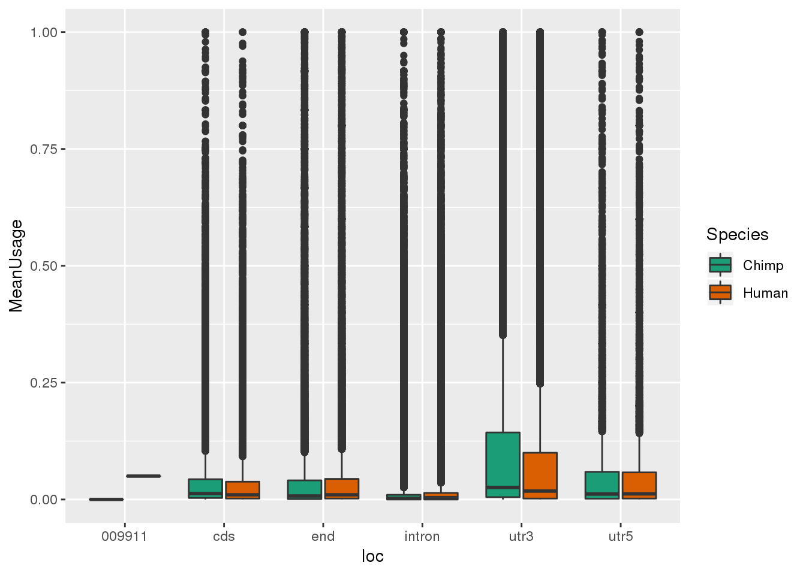
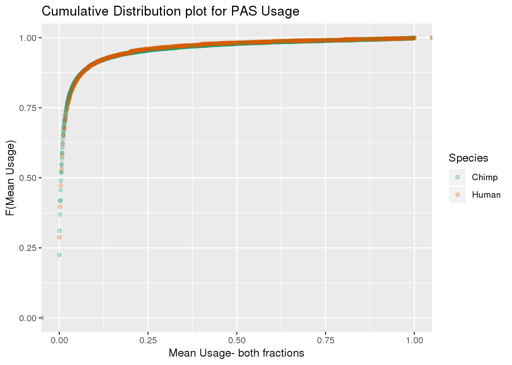
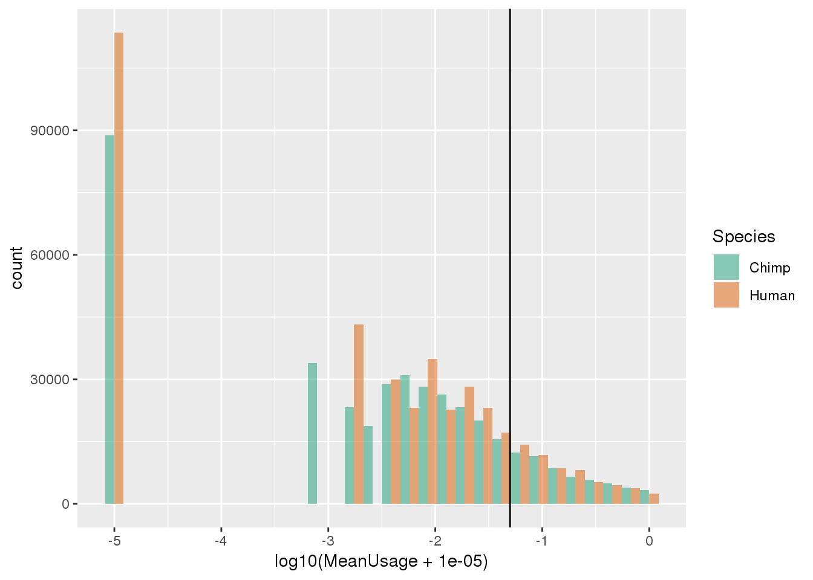
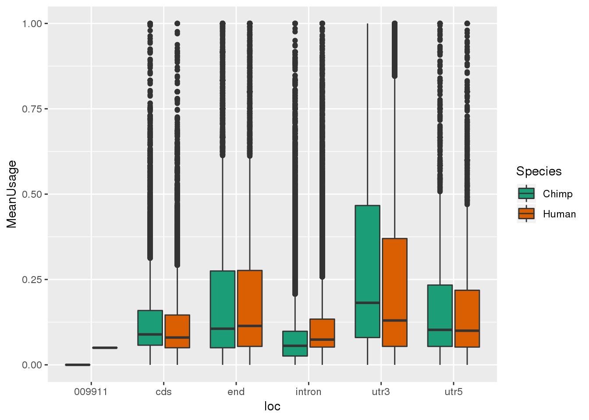
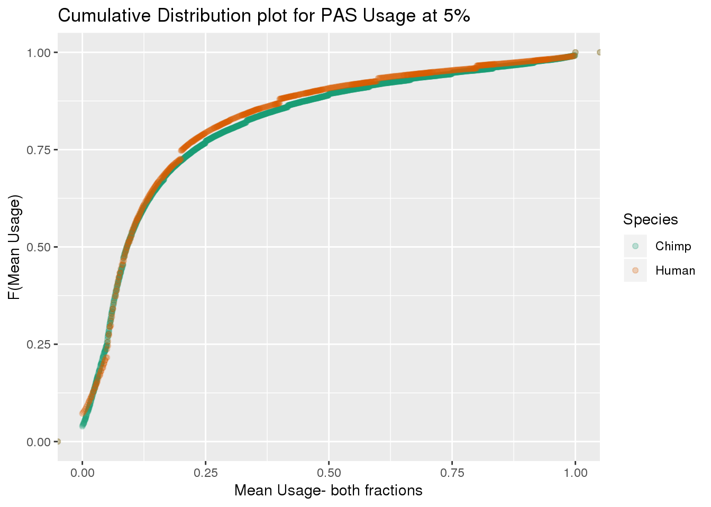
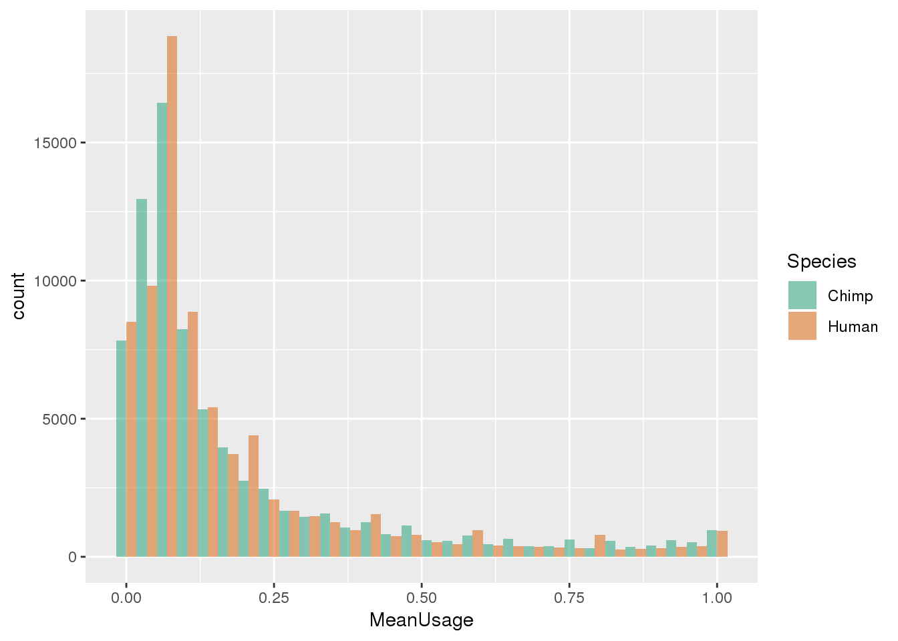

Last updated: 2019-10-04
Checks: 7 0
Knit directory: Comparative_APA/analysis/
This reproducible R Markdown analysis was created with workflowr (version 1.4.0). The Checks tab describes the reproducibility checks that were applied when the results were created. The Past versions tab lists the development history.
Great! Since the R Markdown file has been committed to the Git repository, you know the exact version of the code that produced these results.
Great job! The global environment was empty. Objects defined in the global environment can affect the analysis in your R Markdown file in unknown ways. For reproduciblity it’s best to always run the code in an empty environment.
The command set.seed(20190902) was run prior to running the code in the R Markdown file. Setting a seed ensures that any results that rely on randomness, e.g. subsampling or permutations, are reproducible.
Great job! Recording the operating system, R version, and package versions is critical for reproducibility.
Nice! There were no cached chunks for this analysis, so you can be confident that you successfully produced the results during this run.
Great job! Using relative paths to the files within your workflowr project makes it easier to run your code on other machines.
Great! You are using Git for version control. Tracking code development and connecting the code version to the results is critical for reproducibility. The version displayed above was the version of the Git repository at the time these results were generated.
Note that you need to be careful to ensure that all relevant files for the analysis have been committed to Git prior to generating the results (you can use wflow_publish or wflow_git_commit). workflowr only checks the R Markdown file, but you know if there are other scripts or data files that it depends on. Below is the status of the Git repository when the results were generated:
Ignored files:
Ignored: .DS_Store
Ignored: .Rhistory
Ignored: .Rproj.user/
Ignored: code/chimp_log/
Ignored: code/human_log/
Ignored: data/metadata_HCpanel.txt.sb-f4823d1e-qihGek/
Untracked files:
Untracked: ._.DS_Store
Untracked: Chimp/
Untracked: Human/
Untracked: code/._Config_chimp.yaml
Untracked: code/._Config_human.yaml
Untracked: code/._LiftOrthoPAS2chimp.sh
Untracked: code/._Snakefile
Untracked: code/._SnakefilePAS
Untracked: code/._SnakefilePASfilt
Untracked: code/._bed215upbed.py
Untracked: code/._bed2SAF_gen.py
Untracked: code/._buildStarIndex.sh
Untracked: code/._cleanbed2saf.py
Untracked: code/._cluster.json
Untracked: code/._extraSnakefiltpas
Untracked: code/._filterPASforMP.py
Untracked: code/._filterPostLift.py
Untracked: code/._fixUTRexonanno.py
Untracked: code/._formathg38Anno.py
Untracked: code/._formatpantro6Anno.py
Untracked: code/._intersectLiftedPAS.sh
Untracked: code/._liftPAS19to38.sh
Untracked: code/._maphg19.sh
Untracked: code/._maphg19_subjunc.sh
Untracked: code/._preparePAS4lift.py
Untracked: code/._primaryLift.sh
Untracked: code/._recLiftchim2human.sh
Untracked: code/._revLiftPAShg38to19.sh
Untracked: code/._reverseLift.sh
Untracked: code/._snakemake.batch
Untracked: code/._snakemakePAS.batch
Untracked: code/._snakemakePASchimp.batch
Untracked: code/._snakemakePAShuman.batch
Untracked: code/._snakemake_chimp.batch
Untracked: code/._snakemake_human.batch
Untracked: code/._snakemakefiltPAS.batch
Untracked: code/._snakemakefiltPAS_chimp
Untracked: code/._snakemakefiltPAS_chimp.sh
Untracked: code/._snakemakefiltPAS_human.sh
Untracked: code/._submit-snakemake-chimp.sh
Untracked: code/._submit-snakemake-human.sh
Untracked: code/._submit-snakemakePAS-chimp.sh
Untracked: code/._submit-snakemakePAS-human.sh
Untracked: code/._submit-snakemakefiltPAS-chimp.sh
Untracked: code/._submit-snakemakefiltPAS-human.sh
Untracked: code/.snakemake/
Untracked: code/Config_chimp.yaml
Untracked: code/Config_human.yaml
Untracked: code/LiftOrthoPAS2chimp.sh
Untracked: code/LiftorthoPAS.err
Untracked: code/LiftorthoPASt.out
Untracked: code/Log.out
Untracked: code/Rev_liftoverPAShg19to38.err
Untracked: code/Rev_liftoverPAShg19to38.out
Untracked: code/SAF215upbed_gen.py
Untracked: code/Snakefile
Untracked: code/SnakefilePAS
Untracked: code/SnakefilePASfilt
Untracked: code/Upstream10Bases_general.py
Untracked: code/apaQTLsnake.err
Untracked: code/apaQTLsnake.out
Untracked: code/apaQTLsnakePAS.err
Untracked: code/apaQTLsnakePAS.out
Untracked: code/apaQTLsnakePAShuman.err
Untracked: code/bed215upbed.py
Untracked: code/bed2SAF_gen.py
Untracked: code/bed2saf.py
Untracked: code/bg_to_cov.py
Untracked: code/buildStarIndex.sh
Untracked: code/callPeaksYL.py
Untracked: code/chooseAnno2Bed.py
Untracked: code/chooseAnno2SAF.py
Untracked: code/cleanbed2saf.py
Untracked: code/cluster.json
Untracked: code/clusterPAS.json
Untracked: code/clusterfiltPAS.json
Untracked: code/convertNumeric.py
Untracked: code/extraSnakefiltpas
Untracked: code/filter5perc.R
Untracked: code/filter5percPheno.py
Untracked: code/filterBamforMP.pysam2_gen.py
Untracked: code/filterMissprimingInNuc10_gen.py
Untracked: code/filterPASforMP.py
Untracked: code/filterPostLift.py
Untracked: code/filterSAFforMP_gen.py
Untracked: code/filterSortBedbyCleanedBed_gen.R
Untracked: code/filterpeaks.py
Untracked: code/fixFChead.py
Untracked: code/fixFChead_bothfrac.py
Untracked: code/fixUTRexonanno.py
Untracked: code/formathg38Anno.py
Untracked: code/generateStarIndex.err
Untracked: code/generateStarIndex.out
Untracked: code/intersectLiftedPAS.sh
Untracked: code/liftPAS19to38.sh
Untracked: code/liftoverPAShg19to38.err
Untracked: code/liftoverPAShg19to38.out
Untracked: code/log/
Untracked: code/make5percPeakbed.py
Untracked: code/makeFileID.py
Untracked: code/makePheno.py
Untracked: code/maphg19.err
Untracked: code/maphg19.out
Untracked: code/maphg19.sh
Untracked: code/maphg19_sub.err
Untracked: code/maphg19_sub.out
Untracked: code/maphg19_subjunc.sh
Untracked: code/namePeaks.py
Untracked: code/overlapPAS.err
Untracked: code/overlapPAS.out
Untracked: code/peak2PAS.py
Untracked: code/pheno2countonly.R
Untracked: code/preparePAS4lift.py
Untracked: code/primaryLift.err
Untracked: code/primaryLift.out
Untracked: code/primaryLift.sh
Untracked: code/quantLiftedPAS.err
Untracked: code/quantLiftedPAS.out
Untracked: code/quantLiftedPAS.sh
Untracked: code/recChimpback2Human.err
Untracked: code/recChimpback2Human.out
Untracked: code/recLiftchim2human.sh
Untracked: code/revLift.err
Untracked: code/revLift.out
Untracked: code/revLiftPAShg38to19.sh
Untracked: code/reverseLift.sh
Untracked: code/slurm-62824013.out
Untracked: code/slurm-62825841.out
Untracked: code/slurm-62826116.out
Untracked: code/snakePASChimp.err
Untracked: code/snakePASChimp.out
Untracked: code/snakePAShuman.out
Untracked: code/snakemake.batch
Untracked: code/snakemakePAS.batch
Untracked: code/snakemakePASFiltChimp.err
Untracked: code/snakemakePASFiltChimp.out
Untracked: code/snakemakePASFiltHuman.err
Untracked: code/snakemakePASFiltHuman.out
Untracked: code/snakemakePASchimp.batch
Untracked: code/snakemakePAShuman.batch
Untracked: code/snakemake_chimp.batch
Untracked: code/snakemake_human.batch
Untracked: code/snakemakefiltPAS.batch
Untracked: code/snakemakefiltPAS_chimp.sh
Untracked: code/snakemakefiltPAS_human.sh
Untracked: code/submit-snakemake-chimp.sh
Untracked: code/submit-snakemake-human.sh
Untracked: code/submit-snakemakePAS-chimp.sh
Untracked: code/submit-snakemakePAS-human.sh
Untracked: code/submit-snakemakefiltPAS-chimp.sh
Untracked: code/submit-snakemakefiltPAS-human.sh
Untracked: data/._metadata_HCpanel.txt
Untracked: data/._metadata_HCpanel.txt.sb-f4823d1e-qihGek
Untracked: data/._metadata_HCpanel.xlsx
Untracked: data/Peaks_5perc/
Untracked: data/Pheno_5perc/
Untracked: data/chainFiles/
Untracked: data/cleanPeaks_anno/
Untracked: data/cleanPeaks_byspecies/
Untracked: data/cleanPeaks_lifted/
Untracked: data/liftover_files/
Untracked: data/metadata_HCpanel.txt
Untracked: data/metadata_HCpanel.xlsx
Untracked: data/primaryLift/
Untracked: data/reverseLift/
Note that any generated files, e.g. HTML, png, CSS, etc., are not included in this status report because it is ok for generated content to have uncommitted changes.
These are the previous versions of the R Markdown and HTML files. If you’ve configured a remote Git repository (see ?wflow_git_remote), click on the hyperlinks in the table below to view them.
| File | Version | Author | Date | Message |
|---|---|---|---|---|
| Rmd | d7ac788 | brimittleman | 2019-10-04 | subset 5 perc pas and pheno |
| html | fafaf61 | brimittleman | 2019-10-04 | Build site. |
| Rmd | ca39a2a | brimittleman | 2019-10-04 | finish annoatation and quantification |
| html | 4f7e30d | brimittleman | 2019-10-03 | Build site. |
| Rmd | 8033ddb | brimittleman | 2019-10-03 | get to pheno to find prob |
| html | e0ac227 | brimittleman | 2019-10-03 | Build site. |
| Rmd | e3f0cdf | brimittleman | 2019-10-03 | add annotation analysis |
library(tidyverse)── Attaching packages ─────────────────────────────────────────────── tidyverse 1.2.1 ──✔ ggplot2 3.1.1 ✔ purrr 0.3.2
✔ tibble 2.1.1 ✔ dplyr 0.8.0.1
✔ tidyr 0.8.3 ✔ stringr 1.3.1
✔ readr 1.3.1 ✔ forcats 0.3.0 ── Conflicts ────────────────────────────────────────────────── tidyverse_conflicts() ──
✖ dplyr::filter() masks stats::filter()
✖ dplyr::lag() masks stats::lag()library(reshape2)
Attaching package: 'reshape2'The following object is masked from 'package:tidyr':
smithsI will annotate the PAS that passed the liftover. These PAS are in ../data/cleanPeaks_lifted
Map PAS to these annoations:
mkdir ../data/cleanPeaks_anno
bedtools map -a ../data/cleanPeaks_lifted/AllPAS_postLift.sort.bed -b /project2/gilad/briana/genome_anotation_data/hg38_refseq_anno/hg38_ncbiRefseq_Formatted_Allannotation.sort.bed -c 4 -S -o distinct > ../data/cleanPeaks_anno/AllPAS_postLift.sort_LocAnno.bed Chose annotation if PAS in multiple and create bed. I will have to lift this back to chimp then make saf files for both to do the feature count
python chooseAnno2Bed.py ../data/cleanPeaks_anno/AllPAS_postLift.sort_LocAnno.bed ../data/cleanPeaks_anno/AllPAS_postLift.sort_LocAnnoPARSED.bed Lift this so I have it with chimp coordinates:
sbatch LiftOrthoPAS2chimp.shbed 2 SAF
python bed2SAF_gen.py ../data/cleanPeaks_anno/AllPAS_postLift.sort_LocAnnoPARSED.bed ../data/cleanPeaks_anno/AllPAS_postLift.sort_LocAnnoPARSED.SAF
python bed2SAF_gen.py ../data/cleanPeaks_anno/AllPAS_postLift.sort_LocAnnoPARSED_chimpLoc.bed ../data/cleanPeaks_anno/AllPAS_postLift.sort_LocAnnoPARSED_chimpLoc.SAFUse feature counts to quantify:
mkdir ../Human/data/CleanLiftedPeaks_FC/
mkdir ../Chimp/data/CleanLiftedPeaks_FC/
sbatch quantLiftedPAS.sh
Fix header:
python fixFChead_bothfrac.py ../Human/data/CleanLiftedPeaks_FC/ALLPAS_postLift_LocParsed_Human ../Human/data/CleanLiftedPeaks_FC/ALLPAS_postLift_LocParsed_Human_fixed.fc
python fixFChead_bothfrac.py ../Chimp/data/CleanLiftedPeaks_FC/ALLPAS_postLift_LocParsed_Chimp ../Chimp/data/CleanLiftedPeaks_FC/ALLPAS_postLift_LocParsed_Chimp_fixed.fc
#make file ID
python makeFileID.py ../Chimp/data/CleanLiftedPeaks_FC/ALLPAS_postLift_LocParsed_Chimp ../Chimp/data/CleanLiftedPeaks_FC/ChimpFileID.txt
python makeFileID.py ../Human/data/CleanLiftedPeaks_FC/ALLPAS_postLift_LocParsed_Human ../Human/data/CleanLiftedPeaks_FC/HumanFileID.txtMake phenotypes from these:
mkdir ../Human/phenotype/
mkdir ../Chimp/phenotype/
python makePheno.py ../Human/data/CleanLiftedPeaks_FC/ALLPAS_postLift_LocParsed_Human_fixed.fc ../Human/data/CleanLiftedPeaks_FC/HumanFileID.txt ../Human/phenotype/ALLPAS_postLift_LocParsed_Human_Pheno.txt
python makePheno.py ../Chimp/data/CleanLiftedPeaks_FC/ALLPAS_postLift_LocParsed_Chimp_fixed.fc ../Chimp/data/CleanLiftedPeaks_FC/ChimpFileID.txt ../Chimp/phenotype/ALLPAS_postLift_LocParsed_Chimp_Pheno.txtConvert these to numeric:
Rscript pheno2countonly.R -I ../Human/phenotype/ALLPAS_postLift_LocParsed_Human_Pheno.txt -O ../Human/phenotype/ALLPAS_postLift_LocParsed_Human_Pheno_countOnly.txt
Rscript pheno2countonly.R -I ../Chimp/phenotype/ALLPAS_postLift_LocParsed_Chimp_Pheno.txt -O ../Chimp/phenotype/ALLPAS_postLift_LocParsed_Chimp_Pheno_countOnly.txt
python convertNumeric.py ../Human/phenotype/ALLPAS_postLift_LocParsed_Human_Pheno_countOnly.txt ../Human/phenotype/ALLPAS_postLift_LocParsed_Human_Pheno_countOnlyNumeric.txt
python convertNumeric.py ../Chimp/phenotype/ALLPAS_postLift_LocParsed_Chimp_Pheno_countOnly.txt ../Chimp/phenotype/ALLPAS_postLift_LocParsed_Chimp_Pheno_countOnlyNumeric.txtPlot usages to see if 5% is a good cutoff for this analysis as well.
HumanAnno=read.table("../Human/phenotype/ALLPAS_postLift_LocParsed_Human_Pheno.txt", header = T, stringsAsFactors = F) %>% tidyr::separate(chrom, sep = ":", into = c("chr", "start", "end", "id")) %>% tidyr::separate(id, sep="_", into=c("gene", "strand", "peak")) %>% separate(peak,into=c("loc", "disc","PAS"), sep="-")
IndH=colnames(HumanAnno)[9:ncol(HumanAnno)]
HumanUsage=read.table("../Human/phenotype/ALLPAS_postLift_LocParsed_Human_Pheno_countOnlyNumeric.txt", col.names = IndH)
HumanMean=as.data.frame(cbind(HumanAnno[,1:8], Human=rowMeans(HumanUsage)))
HumanUsage_anno=as.data.frame(cbind(HumanAnno[,1:8],HumanUsage ))ChimpAnno=read.table("../Chimp/phenotype/ALLPAS_postLift_LocParsed_Chimp_Pheno.txt", header = T, stringsAsFactors = F) %>% tidyr::separate(chrom, sep = ":", into = c("chr", "start", "end", "id")) %>% tidyr::separate(id, sep="_", into=c("gene", "strand", "peak")) %>% separate(peak,into=c("loc", "disc","PAS"), sep="-")
IndH=colnames(ChimpAnno)[9:ncol(ChimpAnno)]
ChimpUsage=read.table("../Chimp/phenotype/ALLPAS_postLift_LocParsed_Chimp_Pheno_countOnlyNumeric.txt", col.names = IndH)
ChimpMean=as.data.frame(cbind(ChimpAnno[,1:8], Chimp=rowMeans(ChimpUsage)))
ChimpUsage_anno=as.data.frame(cbind(ChimpAnno[,1:8],ChimpUsage ))Mean both:
BothMean=ChimpMean %>% full_join(HumanMean, by=c("chr","start","end","gene" ,"strand", "loc", "disc","PAS" ))
BothMeanM=melt(BothMean,id.vars =c("chr","start","end","gene" ,"strand", "loc", "disc","PAS" ),variable.name = "Species", value.name = "MeanUsage" ) %>% filter(loc !="008559")Plot:
ggplot(BothMeanM, aes(x=loc, y=MeanUsage,by=Species,fill=Species)) + geom_boxplot() + scale_fill_brewer(palette = "Dark2")
ggplot(BothMeanM, aes(x=MeanUsage,by=Species,col=Species)) + stat_ecdf(geom = "point", alpha=.25) + scale_color_brewer(palette = "Dark2") + labs(title="Cumulative Distribution plot for PAS Usage", x="Mean Usage- both fractions", y="F(Mean Usage)") 
This is good. Globally the usages are similar across species.
ggplot(BothMeanM, aes(x=log10(MeanUsage + .00001),by=Species,fill=Species)) + geom_histogram(alpha=.5, bins=30,position="dodge") + scale_fill_brewer(palette = "Dark2") + geom_vline(xintercept = log10(0.05))
Looks like 5% in either species is a good set.
Filter to PAS with 5% usage
BothMean mean in human or chimp > 0.5
BothMean_5= BothMean %>% filter(Chimp >=0.05 | Human >= 0.05) BothMean_5M=melt(BothMean_5,id.vars =c("chr","start","end","gene" ,"strand", "loc", "disc","PAS" ),variable.name = "Species", value.name = "MeanUsage" ) %>% filter(loc !="008559")
ggplot(BothMean_5M, aes(x=loc, y=MeanUsage,by=Species,fill=Species)) + geom_boxplot() + scale_fill_brewer(palette = "Dark2")
ggplot(BothMean_5M, aes(x=MeanUsage,by=Species,col=Species)) + stat_ecdf(geom = "point", alpha=.25) + scale_color_brewer(palette = "Dark2") + labs(title="Cumulative Distribution plot for PAS Usage at 5%", x="Mean Usage- both fractions", y="F(Mean Usage)") 
ggplot(BothMean_5M, aes(x=MeanUsage,by=Species,fill=Species)) + geom_histogram(alpha=.5, bins=30, position = "dodge") + scale_fill_brewer(palette = "Dark2")
Write this out this way and as a bed files with human and chimp scores:
mkdir ../data/Peaks_5perc
mkdir ../data/Pheno_5percBothMean_5_out=BothMean_5 %>% select(PAS,disc, Chimp, Human)
write.table(BothMean_5_out, "../data/Peaks_5perc/Peaks_5perc_either_bothUsage.txt", row.names = F, col.names = T, quote = F)
#write bed with human coord for igv
BothMean_5_bed=BothMean_5 %>% select(chr, start, end, PAS, Human, strand)
write.table(BothMean_5_bed, "../data/Peaks_5perc/Peaks_5perc_either_HumanCoordHummanUsage.bed", row.names = F, col.names = T, quote = F)I can filter the phenotypes and PAS with this list.
ggplot(BothMean_5_out, aes(x=disc, fill=disc))+ geom_bar(aes(y = (..count..)/sum(..count..)))+ scale_fill_brewer(palette = "Dark2")ChimpUsage_anno_5perc= ChimpUsage_anno %>% filter(PAS %in% BothMean_5$PAS)
write.table(ChimpUsage_anno_5perc, "../data/Pheno_5perc/Chimp_Pheno_5perc.txt", row.names = F, col.names = T, quote = F)
HumaUsage_anno_5perc= HumanUsage_anno %>% filter(PAS %in% BothMean_5$PAS)
write.table(HumaUsage_anno_5perc, "../data/Pheno_5perc/Human_Pheno_5perc.txt", row.names = F, col.names = T, quote = F)
sessionInfo()R version 3.5.1 (2018-07-02)
Platform: x86_64-pc-linux-gnu (64-bit)
Running under: Scientific Linux 7.4 (Nitrogen)
Matrix products: default
BLAS/LAPACK: /software/openblas-0.2.19-el7-x86_64/lib/libopenblas_haswellp-r0.2.19.so
locale:
[1] LC_CTYPE=en_US.UTF-8 LC_NUMERIC=C
[3] LC_TIME=en_US.UTF-8 LC_COLLATE=en_US.UTF-8
[5] LC_MONETARY=en_US.UTF-8 LC_MESSAGES=en_US.UTF-8
[7] LC_PAPER=en_US.UTF-8 LC_NAME=C
[9] LC_ADDRESS=C LC_TELEPHONE=C
[11] LC_MEASUREMENT=en_US.UTF-8 LC_IDENTIFICATION=C
attached base packages:
[1] stats graphics grDevices utils datasets methods base
other attached packages:
[1] reshape2_1.4.3 forcats_0.3.0 stringr_1.3.1 dplyr_0.8.0.1
[5] purrr_0.3.2 readr_1.3.1 tidyr_0.8.3 tibble_2.1.1
[9] ggplot2_3.1.1 tidyverse_1.2.1
loaded via a namespace (and not attached):
[1] Rcpp_1.0.2 RColorBrewer_1.1-2 cellranger_1.1.0
[4] pillar_1.3.1 compiler_3.5.1 git2r_0.25.2
[7] plyr_1.8.4 workflowr_1.4.0 tools_3.5.1
[10] digest_0.6.18 lubridate_1.7.4 jsonlite_1.6
[13] evaluate_0.12 nlme_3.1-137 gtable_0.2.0
[16] lattice_0.20-38 pkgconfig_2.0.2 rlang_0.4.0
[19] cli_1.1.0 rstudioapi_0.10 yaml_2.2.0
[22] haven_1.1.2 withr_2.1.2 xml2_1.2.0
[25] httr_1.3.1 knitr_1.20 hms_0.4.2
[28] generics_0.0.2 fs_1.3.1 rprojroot_1.3-2
[31] grid_3.5.1 tidyselect_0.2.5 glue_1.3.0
[34] R6_2.3.0 readxl_1.1.0 rmarkdown_1.10
[37] modelr_0.1.2 magrittr_1.5 whisker_0.3-2
[40] backports_1.1.2 scales_1.0.0 htmltools_0.3.6
[43] rvest_0.3.2 assertthat_0.2.0 colorspace_1.3-2
[46] labeling_0.3 stringi_1.2.4 lazyeval_0.2.1
[49] munsell_0.5.0 broom_0.5.1 crayon_1.3.4